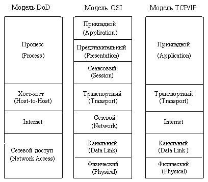
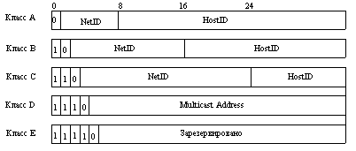
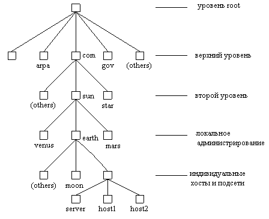

|
2.2. Протоколы, адресация и имена в Internet
Протоколы
Протоколами называют распределенные
алгоритмы, определяющие, каким образом
осуществляется обмен данными между физическими
устройствами или логическим объектами
(процессами). Под семейством протоколов TCP/IP в
широком смысле обычно понимают весь набор
реализаций стандартов RFC (Requests For Comments), а именно:
- Internet Protocol (IP);
- Address Resolution Protocol (ARP);
- Internеt Control Message Protocol (ICMP);
- User Datagram Protocol (UDP);
- Transport Control Protocol (TCP);
- Routing Information Protocol (RIP);
- Telnet;
- Simple Mail Transfer Protocol (SMTP);
- Domain Name System (DNS) и другие.
Общим и основополагающим элементом этого
семейства является IP протокол. Все протоколы
Internet являются открытыми и доступными.
Большинство спецификаций протоколов доступно из
RFC, например, по адресу ftp.internic.net.
Необходимо отметить, что в конце 80-х годов
наблюдался подлинный бум, вызванный разработкой
Международной организацией по стандартизации
коммуникационных протоколов - ISO (International Standard
Organization). Разработанная ISO спецификация, названная
моделью взаимодействия открытых систем (OSI - Open
Systems Interconnection), заполонила научные публикации.
Казалось, что эта модель займет первое место и
оттеснит широко распространившийся TCP/IP. Но этого
не произошло. Одной из причин этого явилась
тщательная проработка протоколов TCP/IP, их
функциональность и открытость к наращиванию
функциональных возможностей, хотя к настоящему
времени достаточно очевидно, что они имеют и
множество недостатков.
Приведем сравнительную схему уровневых
моделей протоколов министерства обороны США (DoD -
Department of Defense), OSI и TCP/IP (рис. 2.1).

Рис. 2.1. Уровневые модели протоколов.
Каждый уровень моделей использует
определенный формат сообщений. При переходе
сообщения с высшего уровня на низший оно
форматируется по правилам низшего уровня и
снабжается заголовком (говорят, что сообщение
закладывается в конверт).
Физический и канальный уровень модели TCP/IP
аналогичны соответствующим уровням OSI:
- на физическом уровне осуществляется физическое
соединение между компьютерной системой и
фи-зической средой передачи. Он определяет
распо-ложение кабельных контактов, напряжение
пита-ния и т.п. Единицей данных на этом уровне
является бит;
- на канальном уровне осуществляется
пакетиро-вание данных для передачи и
распакетирование для приема. Единица данных на
этом уровне называется фреймом;
- на сетевом уровне осуществляется маршрутизация
данных в сети. Единицей данных этого уровня
является датаграмма.
Адресация в Internet
Концепция протокола IP представляет сеть как
множество компьютеров (хостов - hosts), подключенных
к некоторой интерсети. Интерсеть, в свою очередь,
рассматривается как совокупность физических
сетей, связанных маршрутизаторами. Физические
сети представляют из себя коммуникационные
системы произвольной физической природы.
Физические объекты (хосты, маршрутизаторы,
подсети) идентифицируются при помощи
специальных так называемых IP-адресов. Каждый
IP-адрес представляет собой 32-битовый
идентификатор. Принято записывать IP-адреса в
виде 4-х десятичных чисел, разделенных точками.
Каждый адрес является совокупностью двух
идентификаторов: сети - NetID, и хоста - HostID. Все
возможные адреса разделены на 5 классов, схема
которых приведена на рис.2.2.

Рис. 2.2. Классы адресов.
Из рисунка видно, что классы сетей определяют
как возможное количество этих сетей, так и число
хостов в них. Практически используются только
первые три класса:
- Класс А определен для сетей с числом хостов до
16777216. Под поле NetID отведено 7 бит, под поле HostID - 24
бита.
- Класс В используется для среднемасштабных
сетей (NetID - 14 бит, HostID - 16 бит). В каждой такой сети
может быть до 65 536 хостов.
- Класс С применяется для небольших сетей (NetId - 21
бит, HostID - 8 бит) с числом хостов до 255.
Служба имен доменов Internet
Во времена, когда ARPANET состояла из довольно
небольшого числа хостов, все они были
перечислены в одном файле (HOSTS.TXT). Этот
файл хранился в сетевом информационном центре
Станфордского исследовательского института
(SRI-NIC - Stanford Research Institute Network Information Center). Каждый
администратор сайта посылал в SRI-NIC дополнения и
изменения, происшедшие в конфигурации его
системы. Периодически администраторы
переписывали этот файл из SRI-NIC в свои системы, где
из него генерировали файл /etc/hosts. С ростом ARPANET это
стало чрезвычайно затруднительным. С переходом
на TCP/IP совершенствование этого механизма стало
необходимостью, поскольку, например, какой-то
администратор мог присвоить новой машине имя уже
существующей. Решением этой проблемы явилось
создание доменов, или локальных полномочий, в
которых администратор мог присваивать имена
своим машинам и управлять данными адресации в
своем домене.
Служба имен доменов - DNS (Domain Name Service) получает и
предоставляет информацию про хосты сети. Под
доменом понимается множество машин, которые
администрируются и поддерживаются как одно
целое. Можно сказать, что все машины локальной
сети состав-ляют домен в большей сети, хотя можно
и разделить машины локальной сети на несколько
доменов. При подключении к Internet домен должен быть
поименован в соответствии с соглашению об именах
Internet. Internet организован как иерархия доменов.
Каждый уровень иерархии является ветвью уровня root.
На каждом уровне Internet находится сервер имен -
машина, которая содержит информацию о машинах
низшего уровня и соответствии их имен IP-адресам.
Схема построения иерархии доменов приведена на
рис. 2.3.

Рис. 2.3. Структура имен доменов.
Домен корневого уровня формируется NIC.
Домены верхнего уровня имеют следующие ветви: gov
(любые правительственные учреждения), edu
(образовательные учреждения), arpa (ARPANET), com
(коммерческие предприятия), mil (военные
организа-ции), org (другие организации, не
попадающие в пре-дыдущие). Начиная с весны 1997 IAHC
добавил еще
7 доменов: firm (фирмы и направления их
деятель-ности), store (торговые фирмы), web
(объекты, связан-ные с WWW), arts (объекты,
связанные с культурой и искусством), rec
(развлечения и отдых), info (инфор-мационные
услуги) и nom (прочие). Эти имена
соответст-вуют типам сетей, которые составляют
данные домены.
Члены организаций на втором уровне управляют
своими серверами имен.
Домены локального уровня администрируются
орга-низациями. Локальные домены могут состоять
из одного хоста или включать не только множество
хостов, но и свои поддомены.
Каждый узел дерева есть домен, который выбран
как метка. Имя домена образуется конкатенацией
("склеи-ванием" ) всех меток доменов от
корневого до текущего, перечисленных справа
налево и разделенных точками. Например, в имени kernel.generic.edu
:
edu - соответствует верхнему уровню,
generic - показывает поддомен edu,
kernel - является именем хоста.
Необходимо отметить, что число уровней доменов
не ограничено.
Имена доменов являются другим средством
дости-жения целевого хоста. В Internet можно
встретить имена типа netcom.com или spry.com.
Эти имена являются именами доменов, и они
зарегистрированы подобным же образом.
|